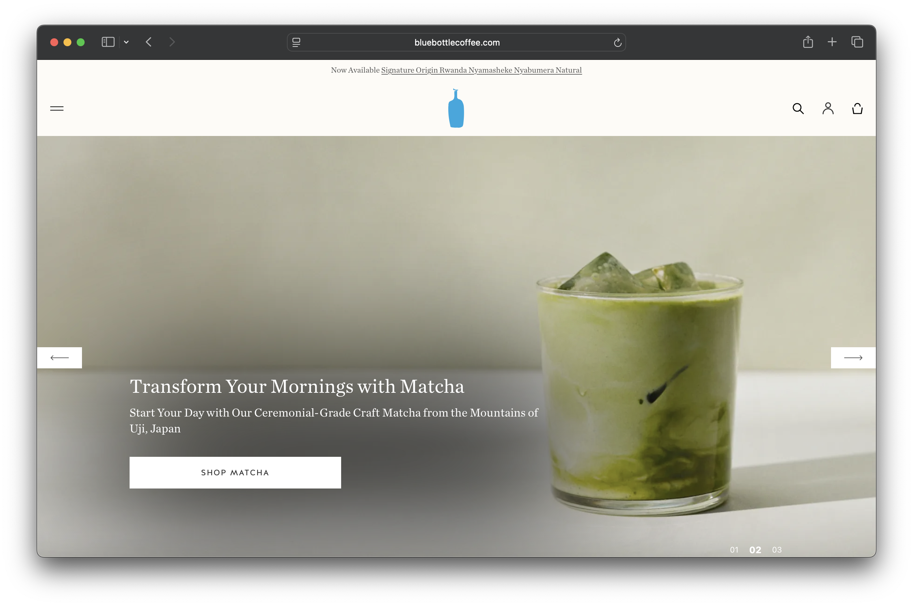
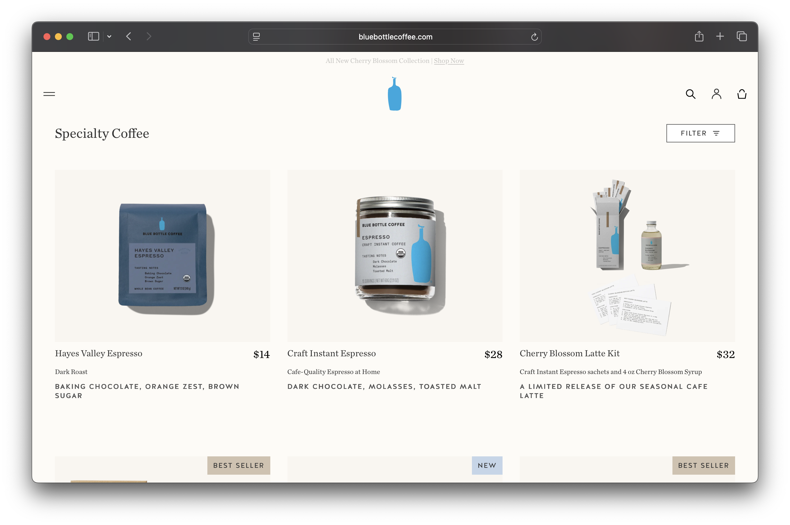
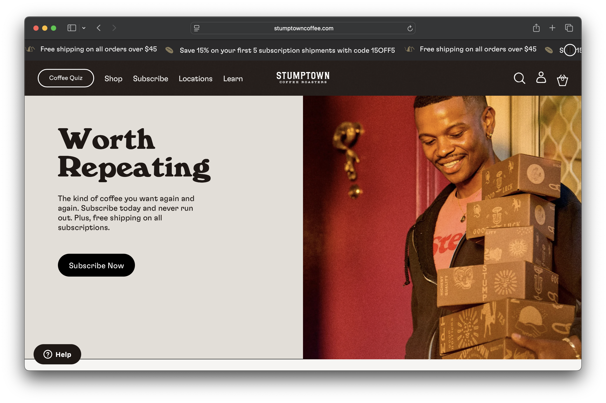
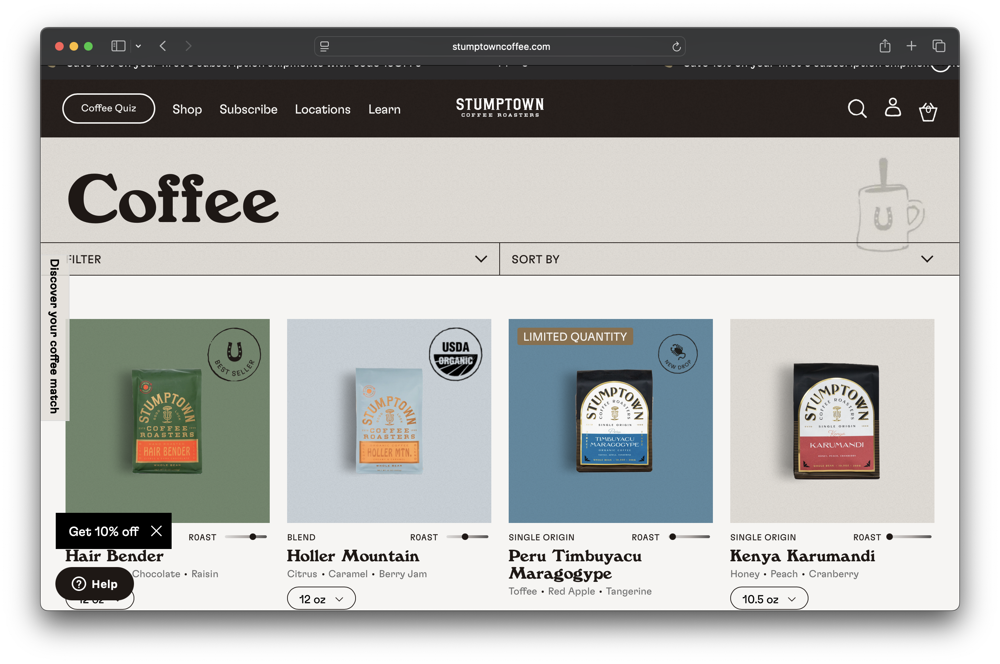

Electric Coffee Co.
Electric Blue Coffee Co. is a small, independently owned coffee shop operating from a single location. The business specializes in handcrafted espresso drinks, specialty lattes, cold brews, teas, and light café foods. Electric Blue Coffee Co. focuses on serving high-quality coffee in a welcoming and comfortable environment. The café is designed to be a place where customers can start their day, meet with friends, work on projects, or take a break. With carefully prepared drinks and friendly service, the business aims to create a reliable and enjoyable coffee experience for the local community.
Electric Blue Coffee Co. is for people who move through busy days and rely on good coffee to keep them going. Some stop in before work, some meet friends in the afternoon, and others need a comfortable place to focus for a while. What they all have in common is that they want quality they can count on and a space that feels easy to walk into.
When people visit the website, they’re usually looking for something specific. They want to check the menu, see prices, decide what to order, or find the café’s hours and location. They don’t want to dig through unnecessary information.The main purpose of the website is to make planning a visit quick and straightforward. It gives visitors the information they need so they can feel confident stopping by.
https://bluebottlecoffee.com/us/eng
 https://www.stumptowncoffee.com/
 Coffee that keeps up with you. Welcome to Electric Coffee Co., a neighborhood café serving handcrafted espresso drinks, specialty lattes, fresh pastries, and simple café favorites made with care. We’re here for early mornings, midday resets, and easy meetups. Whether you’re grabbing something quick or staying awhile, you can expect quality ingredients, consistent flavor, and a space that feels comfortable to walk into any day of the week. Good coffee. Made right. Every time.
[Barista pouring latte art into a ceramic mug]
Electric Coffee began with a simple goal to serve coffee people can count on. We believe great coffee comes from quality ingredients, careful preparation, and attention to detail. Every drink is made with consistency and care, from our espresso to our specialty lattes. We focus on creating a space where people can feel comfortable stopping in, meeting up, or spending a quiet hour with a good cup in hand. We are proud to be part of the everyday routines that bring people together.
[Interior of Electric Coffee with customers]
Espresso blended with hot water for a smooth and bold flavor.
$4.00
Espresso with steamed milk and house made vanilla syrup. Served hot or iced.
$6.50
Slow steeped coffee served chilled for a smooth, low acidity taste.
$3.50
Slow steeped coffee served chilled for a smooth, low acidity taste.
$3.50
Toasted sourdough topped with smashed avocado
$9.50
Baked Fresh Daily.
$6.50
Baked fresh daily with big chocolate chunks.
$6.50
Freshly baked muffin filled with sweet blueberries and a light crumb topping.
$8.50
Visit Electric Coffee in the heart of downtown. Whether you are stopping by before work or meeting friends in the afternoon, we are easy to find and ready to serve you.
125 Main Street
Downtown District
Los Angeles, CA 90275
Monday – Friday: 7:00 AM – 7:00 PM
Saturday – Sunday: 8:00 AM – 6:00 PM
[Front view of Electric Coffee storefront on Main Street]